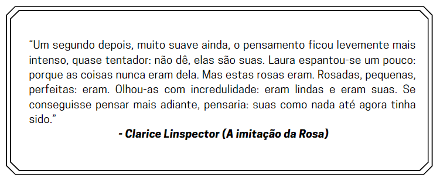

Cada uma das histórias que lemos, ouvimos ou escrevemos é contada por um narrador. Nos exercícios de leitura, assim como nas experiências de escrita, é fundamental a preocupação com o narrador. Grosso modo, podemos distinguir três tipos de narrador, isto é, três tipos de foco narrativo:
Narrador Personagem;
Narrador Observador;
Narrador Onisciente.


O narrador-personagem conta na 1ª pessoa a história da qual participa também como personagem. Ele tem uma relação íntima com os outros elementos da narrativa. Sua maneira de contar é fortemente marcada por características subjetivas, emocionais.
Essa proximidade com o mundo narrado revela fatos e situações que um narrador de fora não poderia conhecer. Ao mesmo tempo, essa mesma proximidade faz com que a narrativa seja parcial, impregnada pelo ponto de vista do narrador.
Exemplo de Narrador-Personagem:
O narrador-observador conta a história do lado de fora, na 3ª pessoa, sem participar das ações. Ele conhece todos os fatos e, por não participar deles, narra com certa neutralidade, apresenta os fatos e os personagens com imparcialidade. Não tem conhecimento íntimo dos personagens nem das ações vivenciadas.
Exemplo de Narrador-Observador:

O narrador-onisciente conta a história em 3ª pessoa e, às vezes, permite certas intromissões narrando em 1ª pessoa. Ele conhece tudo sobre os personagens e sobre o enredo, sabe o que passa no íntimo das personagens, conhece suas emoções e pensamentos.
Ele é capaz de revelar suas vozes interiores, seu fluxo de consciência, em 1ª pessoa. Quando isso acontece, o narrador faz uso do discurso indireto livre. Assim, o enredo se torna plenamente conhecido, os antecedentes das ações, suas entrelinhas, seus pressupostos, seu futuro e suas consequências.
Exemplo de Narrador-Onisciente:
